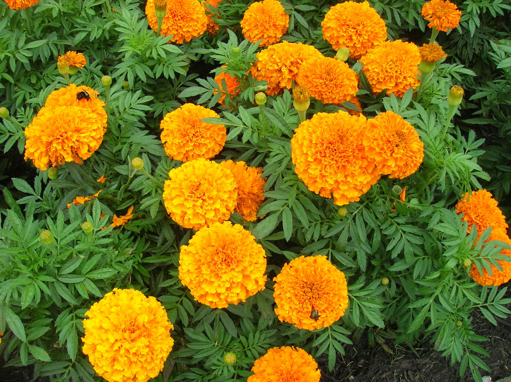

Marigold
Marigolds are popular annual flowers known for their bright colors and easy care. Here's a comprehensive guide on marigolds, including their , types, planting procedure, and care.
Types of Marigolds:
- African Marigolds : Known for their large, fully double flowers and strong, sturdy stems. They can grow up to 3 feet tall and come in shades of yellow, orange, and red.
- French Marigolds: Compact plants with smaller flowers, usually single or semi-double. They are available in a wide range of colors, including orange, yellow, gold, and bi-colors.
- Signet Marigolds : Delicate-looking plants with lacy foliage and small, single flowers. They are often used as edging plants or in containers and come in shades of yellow and orange.
- Planting Procedure:
- Spring: Marigold seeds can be sown directly in the garden after the last frost date in spring, or you can start seeds indoors 6 to 8 weeks before the last frost for earlier blooms.
- Soil Temperature: Wait until the soil temperature reaches at least 60°F (15.5°C) for optimal germination.
- Sunlight: Marigolds prefer full sun and thrive in hot, sunny locations.
- Soil: Choose well-draining soil with a pH between 6.0 and 7.0. Marigolds can tolerate a wide range of soil types but prefer fertile, loamy soil.
Weather in Kathmandu
Temperature: °C
Humidity: %
Condition:
Date & Time: